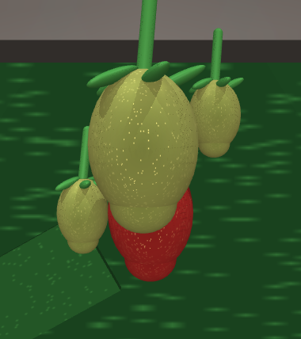
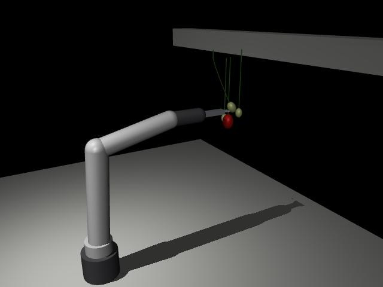

-

V1ArchivedA photo, measured by colour, turned into a simulation
How it was built
- Berries in one field photo found by a hand-set colour threshold
- Each berry a rigid body welded to a fixed anchor standing in for its stem; cutting the stem switched the weld off
- A 4-joint arm; an AI agent fixed the picking policy
Open the V1 demo →What was wrong
- The failure was logged as
stem_torn, but what happened was the cutter pressing on the unripe berry in front. Pushing a berry does not tear a stem. - The weld did not give, so the cutter pressed with 76.6 N, far more than a hanging berry could push back.
-
 V2Current
V2CurrentRGB-D images, a YOLO detector and a 6-axis arm
How it was built
- Ten logged attempts, each with an RGB-D image rendered in Blender
- A YOLO11n model boxes each berry and says if it is ripe; depth places it in 3D
- A 6-axis arm; the agent may change only
robot_controller.py
Better than V1
- A trained detector instead of a colour threshold, and real depth instead of a guess
- The failure is called what it is: a
collisionwith the unripe berry, stopped at the robot's 5 N force limit
Open the V2 demo →What was wrong
- The berries are hard and fixed in place, and the stems are only drawn: a stem acts like a steel wire.
- So the cutter meets the unripe berry like a wall: 51.8 N, ten times the limit. A real berry on a soft stem would swing out of the way.
-

V3In progressSoft, elastic stems
How it is built
- Each stem is an elastic rod that bends and twists (MuJoCo's 1D flexcomp), clamped where it hangs from
- Each fruit is a free body hanging from the end of its stem
Better than V2
- A pushed berry swings aside and its stem bends, then it swings back
- Contact forces are realistic: pushing the unripe berry aside takes about 0.15 N, not 51.8 N
Demo not recorded yetStill open
- With stems this soft, going straight in no longer fails: the unripe berry just swings out of the way. The field failure needs a new, realistic cause before V3 can be a demo.